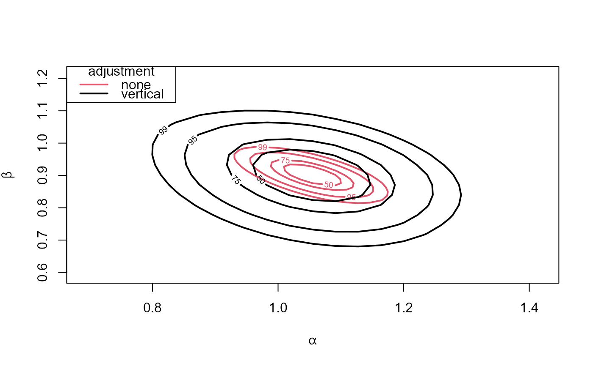
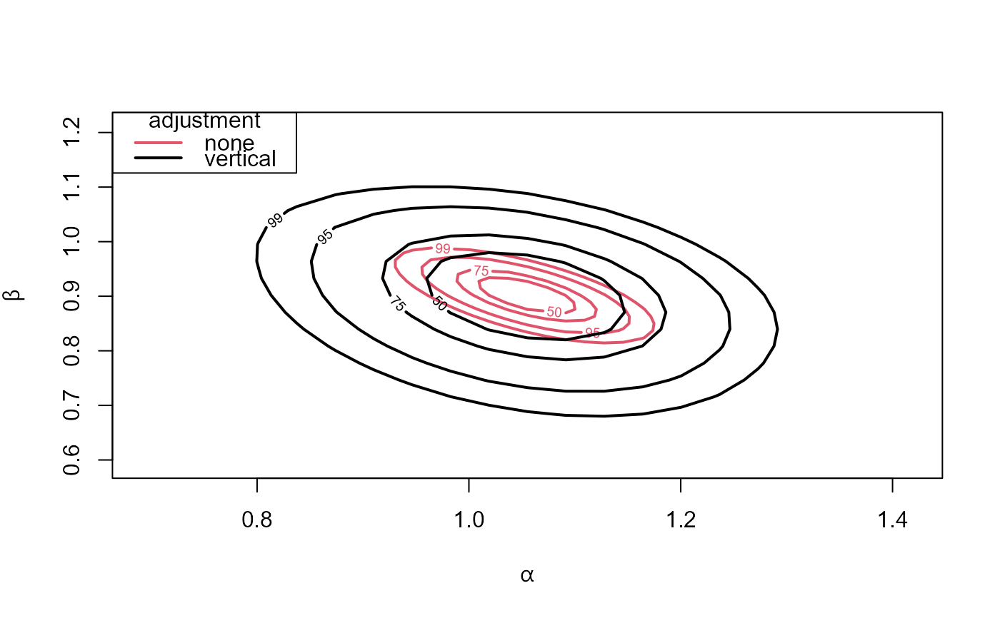

Calculates the (profile, if necessary) loglikelihood for a pair of
parameters from which confidence regions can be plotted using
plot.confreg.
Arguments
- object
An object of class
"chandwich"returned byadjust_loglik.- which_pars
A vector of length 2 specifying the 2 (unfixed) parameters for which confidence region is required. Can be either a numeric vector, specifying indices of the components of the full parameter vector, or a character vector of parameter names, which must be a subset of those supplied in
par_namesin the call toadjust_loglikthat producedobject.which_parsmust not have any parameters in common withattr(object, "fixed_pars").which_parsmust not contain all of the unfixed parameters, i.e. there is no point in profiling over all the unfixed parameters.If
which_parsis not supplied but the current model has exactly two free parameters, i.e.attr(object, "p_current") = 2thenwhich_parsis set toattr(object, "free_pars") = 2.- range1, range2
Numeric vectors of length 2. Respective ranges (of the form
c(lower, upper)) of values ofwhich_pars[1]andwhich_pars[2]over which to profile. Missing values inrange1and/orrange2are filled in usingconfandmult. See below for details.- conf
A numeric scalar in (0, 100). The highest confidence level of interest. This is only relevant if
range1and/orrange2are not completely specified. In that eventconfis used, in combination withmult, to try to set up the grid of parameter values to include the largest confidence region of interest.- mult
A numeric vector of length 1 or the same length as
which_pars. The search for the profile loglikelihood-based confidence limits is conducted over the corresponding symmetric confidence intervals (based on approximate normal theory), extended by a factor of the corresponding component ofmult.- num
A numeric vector of length 1 or 2. The numbers of values at which to evaluate the profile loglikelihood either side of the MLE.
num[i]relates towhich_pars[i]. Ifnumhas length 1 thennumis replicated to have length 2.- type
A character scalar. The argument
typeto the function returned byadjust_loglik, that is, the type of adjustment made to the independence loglikelihood function.- ...
Further arguments to be passed to
optim. These may includegr,method,lower,upperorcontrol. Any arguments that are not appropriate foroptim, i.e. not inmethods::formalArgs(stats::optim), will be removed without warning.
Value
An object of class "confreg", a list with components
- grid1, grid2
Numeric vectors. Respective values of
which_pars[1]andwhich_pars[2]in the grid over which the (profile) loglikelihood is evaluated.- max_loglik
A numeric scalar. The value value of the loglikelihood at its maximum.
- prof_loglik
An 2
num+ 1 by 2num+ 1 numeric matrix containing the values of the (profile) loglikelihood.- type
A character scalar. The input
type.- which_pars
A numeric or character vector. The input
which_pars. If thewhich_parswas numeric then it is supplemented by the parameter names, if these are available inobject.- name
A character scalar. The name of the model, stored in
attr(object, "name").
See also
adjust_loglik to adjust a user-supplied
loglikelihood function.
conf_intervals for confidence intervals for
individual parameters.
compare_models to compare nested models using an
(adjusted) likelihood ratio test.
Examples
# -------------------------- GEV model, owtemps data -----------------------
# ------------ following Section 5.2 of Chandler and Bate (2007) -----------
gev_loglik <- function(pars, data) {
o_pars <- pars[c(1, 3, 5)] + pars[c(2, 4, 6)]
w_pars <- pars[c(1, 3, 5)] - pars[c(2, 4, 6)]
if (isTRUE(o_pars[2] <= 0 | w_pars[2] <= 0)) return(-Inf)
o_data <- data[, "Oxford"]
w_data <- data[, "Worthing"]
check <- 1 + o_pars[3] * (o_data - o_pars[1]) / o_pars[2]
if (isTRUE(any(check <= 0))) return(-Inf)
check <- 1 + w_pars[3] * (w_data - w_pars[1]) / w_pars[2]
if (isTRUE(any(check <= 0))) return(-Inf)
o_loglik <- log_gev(o_data, o_pars[1], o_pars[2], o_pars[3])
w_loglik <- log_gev(w_data, w_pars[1], w_pars[2], w_pars[3])
return(o_loglik + w_loglik)
}
# Initial estimates (method of moments for the Gumbel case)
sigma <- as.numeric(sqrt(6 * diag(var(owtemps))) / pi)
mu <- as.numeric(colMeans(owtemps) - 0.57722 * sigma)
init <- c(mean(mu), -diff(mu) / 2, mean(sigma), -diff(sigma) / 2, 0, 0)
# Log-likelihood adjustment of the full model
par_names <- c("mu[0]", "mu[1]", "sigma[0]", "sigma[1]", "xi[0]", "xi[1]")
large <- adjust_loglik(gev_loglik, data = owtemps, init = init,
par_names = par_names)
# \donttest{
# Plots like those in Figure 4 of Chandler and Bate (2007)
# (a)
which_pars <- c("mu[0]", "mu[1]")
reg_1 <- conf_region(large, which_pars = which_pars)
#> Waiting for profiling to be done...
reg_none_1 <- conf_region(large, which_pars = which_pars, type = "none")
#> Waiting for profiling to be done...
plot(reg_1, reg_none_1)
 # (b)
which_pars <- c("sigma[0]", "sigma[1]")
reg_2 <- conf_region(large, which_pars = which_pars)
#> Waiting for profiling to be done...
reg_none_2 <- conf_region(large, which_pars = which_pars, type = "none")
#> Waiting for profiling to be done...
plot(reg_2, reg_none_2)
# (c)
# Note: the naive and bivariate model contours are the reversed in the paper
which_pars <- c("sigma[0]", "xi[0]")
reg_3 <- conf_region(large, which_pars = which_pars)
#> Waiting for profiling to be done...
reg_none_3 <- conf_region(large, which_pars = which_pars, type = "none")
#> Waiting for profiling to be done...
plot(reg_3, reg_none_3)
# }
# --------- Misspecified Poisson model for negative binomial data ----------
# ... following Section 5.1 of the "Object-Oriented Computation of Sandwich
# Estimators" vignette of the sandwich package
# https://cran.r-project.org/web/packages/sandwich/vignettes/sandwich-OOP.pdf
# Simulate data
set.seed(123)
x <- rnorm(250)
y <- rnbinom(250, mu = exp(1 + x), size = 1)
# Fit misspecified Poisson model
fm_pois <- glm(y ~ x + I(x^2), family = poisson)
summary(fm_pois)$coefficients
#> Estimate Std. Error z value Pr(>|z|)
#> (Intercept) 1.06326821 0.04135723 25.709367 9.184267e-146
#> x 0.99607219 0.05353446 18.606186 2.862861e-77
#> I(x^2) -0.04912373 0.02314608 -2.122335 3.380961e-02
# Contributions to the independence loglikelihood
pois_glm_loglik <- function(pars, y, x) {
log_mu <- pars[1] + pars[2] * x + pars[3] * x ^ 2
return(dpois(y, lambda = exp(log_mu), log = TRUE))
}
pars <- c("alpha", "beta", "gamma")
# Linear model (gamma fixed at 0)
pois_lin <- adjust_loglik(pois_glm_loglik, y = y, x = x, par_names = pars,
fixed_pars = "gamma")
pois_vertical <- conf_region(pois_lin)
#> Waiting for profiling to be done...
pois_none <- conf_region(pois_lin, type = "none")
#> Waiting for profiling to be done...
plot(pois_none, pois_vertical, conf = c(50, 75, 95, 99), col = 2:1, lwd = 2,
lty = 1)

# (b)
which_pars <- c("sigma[0]", "sigma[1]")
reg_2 <- conf_region(large, which_pars = which_pars)
#> Waiting for profiling to be done...
reg_none_2 <- conf_region(large, which_pars = which_pars, type = "none")
#> Waiting for profiling to be done...
plot(reg_2, reg_none_2)
# (c)
# Note: the naive and bivariate model contours are the reversed in the paper
which_pars <- c("sigma[0]", "xi[0]")
reg_3 <- conf_region(large, which_pars = which_pars)
#> Waiting for profiling to be done...
reg_none_3 <- conf_region(large, which_pars = which_pars, type = "none")
#> Waiting for profiling to be done...
plot(reg_3, reg_none_3)
# }
# --------- Misspecified Poisson model for negative binomial data ----------
# ... following Section 5.1 of the "Object-Oriented Computation of Sandwich
# Estimators" vignette of the sandwich package
# https://cran.r-project.org/web/packages/sandwich/vignettes/sandwich-OOP.pdf
# Simulate data
set.seed(123)
x <- rnorm(250)
y <- rnbinom(250, mu = exp(1 + x), size = 1)
# Fit misspecified Poisson model
fm_pois <- glm(y ~ x + I(x^2), family = poisson)
summary(fm_pois)$coefficients
#> Estimate Std. Error z value Pr(>|z|)
#> (Intercept) 1.06326821 0.04135723 25.709367 9.184267e-146
#> x 0.99607219 0.05353446 18.606186 2.862861e-77
#> I(x^2) -0.04912373 0.02314608 -2.122335 3.380961e-02
# Contributions to the independence loglikelihood
pois_glm_loglik <- function(pars, y, x) {
log_mu <- pars[1] + pars[2] * x + pars[3] * x ^ 2
return(dpois(y, lambda = exp(log_mu), log = TRUE))
}
pars <- c("alpha", "beta", "gamma")
# Linear model (gamma fixed at 0)
pois_lin <- adjust_loglik(pois_glm_loglik, y = y, x = x, par_names = pars,
fixed_pars = "gamma")
pois_vertical <- conf_region(pois_lin)
#> Waiting for profiling to be done...
pois_none <- conf_region(pois_lin, type = "none")
#> Waiting for profiling to be done...
plot(pois_none, pois_vertical, conf = c(50, 75, 95, 99), col = 2:1, lwd = 2,
lty = 1)
